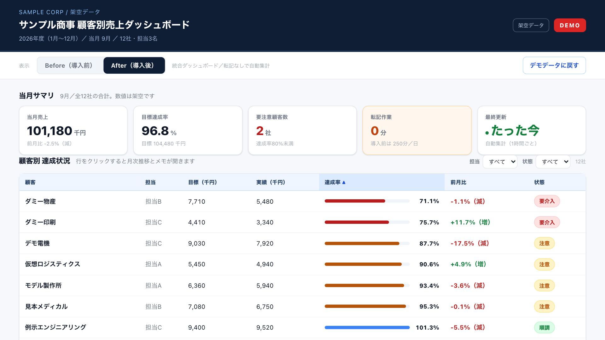

実際に構築した画面が、そのまま動きます。
説明を読むかわりに、見て・触ってご確認ください。
30秒・音は出ません／AIが下書きを作り、人が判断するまでの流れ
事例の実演
音は出ません。字幕だけで追えます。画面に出ている社名・数値はすべて架空データです。
案件ごとに分かれていたシートの書式を揃え、集計をGASに任せました。達成率が下がった顧客はアラートが自動で拾います。
80時間/月
工数削減
月次→即時
未達の検知
会議が終わると議事録が自動でできます。「解約」「他社と比較」「増額」といった一言をAIが拾い、担当者へ通知します。
100%
作成工数の削減
即時
危機・機会の検知
触ってみる
事例①の実演に出てくる画面そのものです。ブラウザだけで動きます。ログインは要りません。

別のタブで開きます。社名・数値はすべて架空です。入力したものはどこにも送信されません。
導入前の課題から、実際に作る場面、導入後の数字までを続けて説明する長編です。公開までは、上の60秒の実演をご覧ください。商談前に個別でお送りすることもできます。